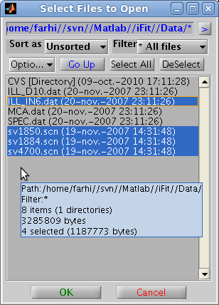
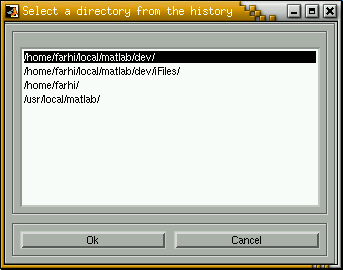
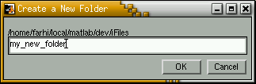
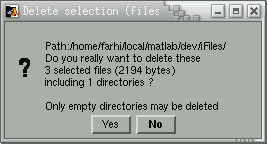

[ Overview ][ Syntax
][ Details ][ Examples
][ Technical
notes
][ License ]
Usage
Overview
The Loaders/uigetfiles function is a multiple
file selector which is compatible in usage with the Matlab uigetfile
function.
It's main advantages is that is does not depend on the Java libraries,
and always behaves the same with multiple-selection, independently of
platforms and Matlab versions.
You may:
- browse the file/directory structure (double click on directories
to get
into them, select the '..' item to go one level up, or the 'Go up'
button
- select a single file by double-clicking it
- enter directly a path specification, optionally with a file name
and/or
a filter
- perform a few basic file operations (edit or delete files, create
directories...)
- select one or multiple files, using the Shift-click and Control-click
mouse
operations
- dynamically compute selected files size sum
Syntax: [filename, pathname] =
uigetfiles(filterspec,
title, x, y)
The uigetfiles syntax is strictly compatible with the
standart
uigetfile
(which calls java.awt).
To start the multiple file selector, use
[filenames, pathnames] = uigetfiles;
Returned values [filenames, pathnames] are cell string arrays, or two
single
character strings if only one item was selected.
Both files amd directories may be selected.
The filename output, when specified from the Path 'edit' field (top
of the Dialog) is not checked for existence. Anyway, when selected from
the list (that shows directory contents), the existence of files is
certain.
Filters may be specified using a character array, or cellstring array
such as
filterspec = '*.m';
filterspec = [ '*.m','*.mat'];
filterspec = {'*.m','Matlab files';'*.mat','Matlab data'};
You may not use multiple filters as one filter entry, such as
in
'*.m;*.mat', it must be specified as a cellstr. This is a difference with
the uigetfile syntax.
The filter specification (first argument), when given as a single
character
string, may contain the startting directory, and optionally a file
name,
and an extension.
filterspec = '/home/farhi/*.m';
If no extension is specified, a default extension list is set. In any
case,
the 'All files' extension is appended as the last extension choice.
A title, and the window position may be additionally specified.
Default starting location is the current directory, or the last
accessed
directory stored in the UIGetFiles Dialog.
Examples
[filename, pathname] = uigetfiles('*.m', 'Pick one or more M-file(s)');
Details
|

|
UIGetFiles main interface
The uigetfiles main interface looks like a file selector. The
upper
part shows the current Path,
including
filters. The directory contents is listed in the large central part
(sliders
appear when many items are to be listed). The items list may be sorted
by Name, Date, Size and Extension, and pre-selected filters are
available.
The user has access to the following buttons/actions:
- Path: type a new Path
and
press enter
to update directory listing
- >: select a
previously
accessed directory
(history)
- Sort as: select sort type (Name, Date, Size and
Extension)
- Filter: select among available file filters, or
the
'All files'
filter
- Go up: go up one directory level
- Select All: select all items in directory listing
- Deselect: deselect all items in directory listing
- Directory listing:
- select one or multiple files, using the Shift-click and
Control-click
mouse
operations
- double click to enter a directory
- double click to select a single file
- OK: accept current selection
- Cancel: abort file selection
- Options: additional operations
- Help: show this help
- Edit files: edit selected files
- New Dir: create a new directory
- Delete files: delete selected files (with warning)
- Show/Hide hidden files
Tool Tips (contextual help) are shown when the mouse
pointer
remains for more than a second over all uicontrols (buttons,
menus,
lists, ...).
Additionally, the Tool Tip for the selected items in the
directory listing
will compute the total and selected size for files.
|
|
Directory short cuts (history)
When selecting the '>'
button on
the right of the Path , a list of
the
last 10 previously accessed directories is shown. The user may
then
directly come back to his prefered location at once.
New locations are added when closing the Dialog (OK, Cancel).
|
 |
|  |
Creating a new directory
A new directory may be created in the current Path.
|
|
Deleting files/empty directories
You may delete selected files and empty directories. A warning
Dialog
is displayed for confirmation.
|
 |
|
Keyboard
short-cuts
The following actions can be triggered when pressing a key:
o: OK
c: Cancel
e: Edit file(s)
h: Help
|
n: New Folder
a: Select All
d: Deselect all
u: Go one level up |
Technical notes
This multiple file selector is programmed in pure Matlab 6
language,
and is thus fully portable.
function [filename, pathname] = uigetfiles(filterspec,
title,
x, y)
It comes into a single M-file uigetfiles.m
containing two private inline functions:
- function fig = UIGetFilesBuild(smode)
Builds-up the user interface, including tooltips, callbacks,
or make it visible if it was hidden previously.
Returns the UIGetFiles main window handle.
- function UD = UIGetFilesMain(object)
Updates and sort the directory contents, tooltips, selections, ...
Returns the UIGetFiles UserData structure
Basically, callbacks are sent to uigetfiles
function with a structure as single parameter. This structure as the
following
fields
- action = 'string': callback type
- object = handle: handle of the object that generated the callback
The following actions are supported:
- show: just update view without re-scanning directory
- update: update directory contents, with new filters,
etc...
- action: use the popupmenu UIGetFiles.Action Value
to
select
an other action ('Options' menu in Dialog)
- new folder: create a new folder
- go up: go up one level
- delete: delete the dialog from memory, instead of
hidding it
(default)
- select all: select all items
- previous: shows a list of previously accessed
directories
(short-cuts)
- keypressed: handle a key pressed on the figure
area (not
over the uicontrol)
- help: display this help
- edit: edit all selected files
- delete files: delete selected files from disk
- handle list: handle mouse clicks on the list,
essentially
tooltip
update and directory double-click to open them.
- ok: ends the Dialog uiwait loop, and returns selected
file
and directories.
Stores current directory in short-cut list.
- cancel: cancel Dialog, Stores current directory in
short-cut
list.
- toggle hidden files: Do
as mentioned
The Dialog is first built or made visible, updates the current
directory,
and enters an uiwait loop. This loop is broken when selecting
OK
or Cancel buttons, or closing the window. All these actions make the
Dialog
hidden (not deleted), in order to retain current settings.
License
This piece of software is part of the ILL/Risoe Matlab Library for
Fitting (iFit). Refer
to the License file from the
distribution
for usage and distribution terms (EUPL).
iFit/Loaders/uigetfiles, June 2008, E. Farhi <farhi@ill.fr>, $Revision: 1035 $